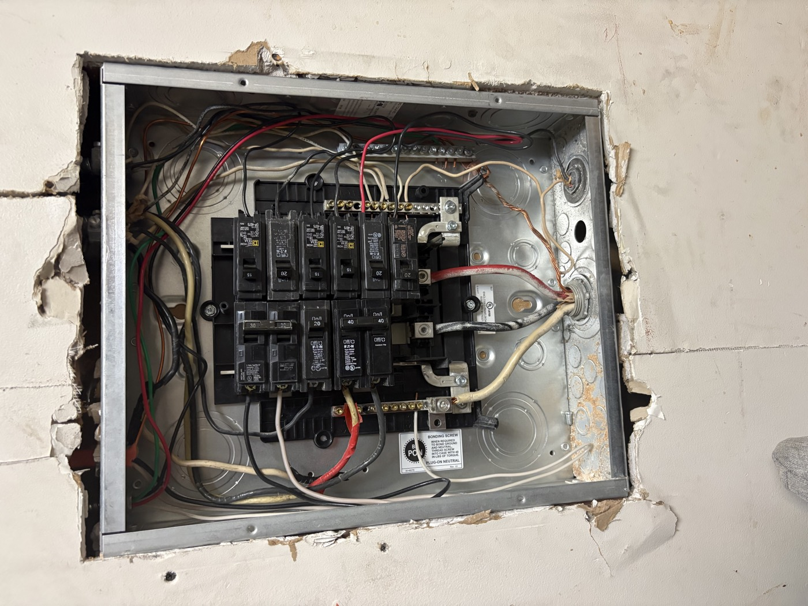

Louvansky Benjamin / NJIT
WIRED FOR
WHAT’S
NEXT.
SDET student. Assistant Electrician.
A future in Electrical Engineering.
I’m studying SDET at NJIT with a Business minor and working alongside my father at American Electrical Technologies INC. From wires in the wall to ideas in code, I enjoy figuring out how things work.

Real problem-solving.Panel upgrade & AC circuit
The circuit directory
Three projects. Hands-on experience.
01 / Education
Learning at NJIT.
New Jersey Institute of Technology
I’m studying SDET at NJIT with a minor in Business. My interests span programming, CAD, and electrical engineering, bringing together the technical and practical sides of my education. After my undergraduate studies, I plan to pursue a master’s degree in Electrical Engineering.
02 / Experience
Working alongside family.
Assistant Electrician
At my father’s company, American Electrical Technologies INC, I work on electrical troubleshooting, wiring, and installation. My project experience includes disconnect relocation, a dedicated AC circuit, and an outdoor lighting switch installation.
03 / Connect
Let’s connect.
Connect with me on LinkedIn to talk about my electrical project experience, studies at NJIT, or shared interests in technology and sports analytics.
Louvansky Benjamin on LinkedIn